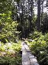

We had our first breakfast at the Hartstone Inn and we were impressed. Lovely food, beautifully presented. On the strength of that we decided to see if they had any availability for dinner either today or tomorrow. Unfortunately not.
We thought that giving sea kayaking a try would be fun, and it's something that the Lonely Planet mentions for Camden, and so Rich started calling around the various operators - no one was running any trips, so that idea was out.
Instead we drove to the Camden Hills State Park, paid our admission and parked. We decided to follow our host's advice and walk up to Ocean Lookout (near the top of Mt Megunticook). There were quite a lot of people also doing this trail and so it wasn't as peaceful as our walk on Thursday. However, the view was pretty impressive looking down over Camden and the areas around. We decided that having got so far we'd continue to the top of Mt Megunticook and followed the well-marked, fairly easy going trail. We retraced our steps back to Ocean Lookout and then took a different, tougher and quieter route down. A very pleasant way to spend a few hours.
We drove on to Lincolnville beach and stopped for a picnic lunch. The beach store provided us with good, filling subs which we sat on a bench to eat.
The only thing left in the Guide book for the area was Fort Knox so we headed off there. Bizarre place, really strange. For starters they were having a medieval demonstration - remember that the fort wasn't built until 1869 - which seemed a little odd. Then we got lost inside the inner section, there were few signs, little information, no maps (apart from the one we got on entry) and no signs on how to exit. We weren't the only ones having difficulty as there were lots of people wandering around looking confused. Finally we escaped and headed off before we got trapped again.
We drove back to Camden and to the hotel. We had a look through the menus in the binder downstairs and found a nice looking restaurant. After some time spent relaxing we showered and got smartened up and headed to Cork in Bay View Road. We didn't expect to get a table but we were fortunate that some people had just left. The food was wonderful, and the portion sizes were just right for us. Rich choose herb crusted lamb for his main course, whilst I had the Lobster and mushroom casserole. We shared them both and they were both great, the best food we've had on this trip. The service was great, really understated, and the wine (a New Zealand Sauvignon Blanc) was a good choice. All in all a great way to celebrate our one week anniversary.
(11 images.)|
A walk in the woods |
Jane at Ocean Lookout | 
Boardwalk |
Jane and Richard at the lookout |
|
Medieval smoker! |
Fort Knox |
Inside Fort Knox |
Inside Fort Knox |
|
Jousting |
View out from the Fort |
Cannonballs |